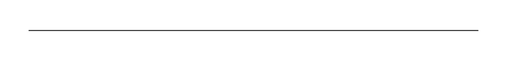
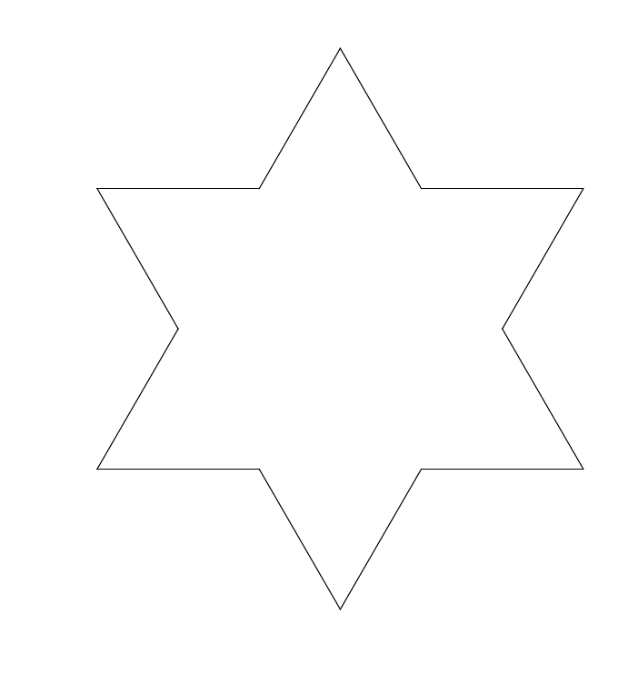
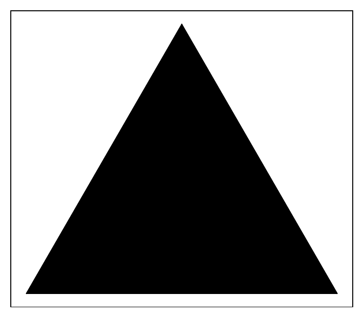
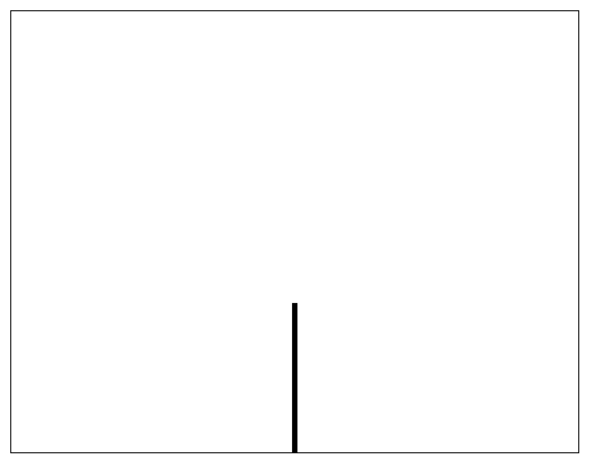
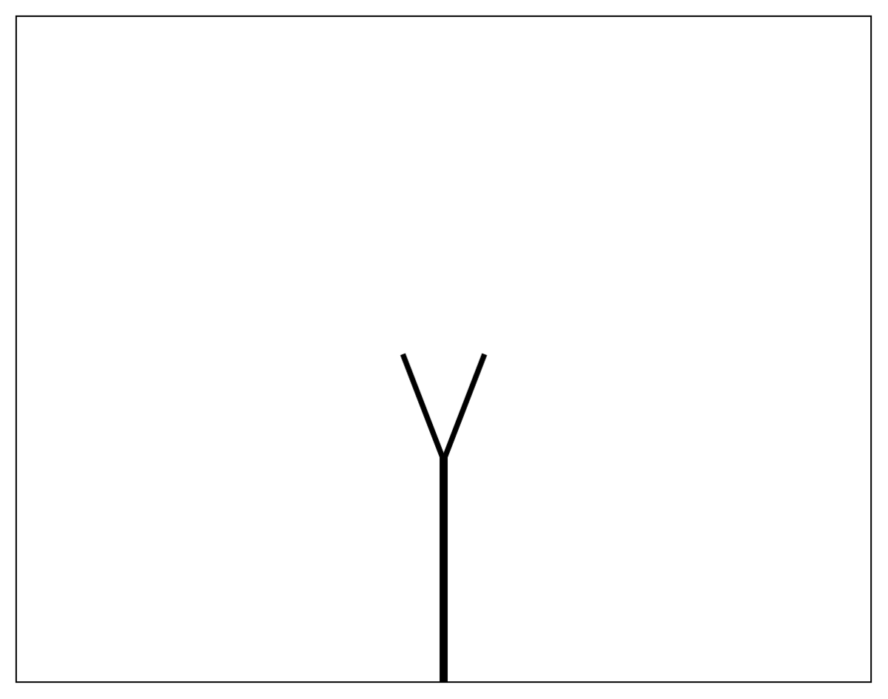

Fractals
Fractals are unique mathematical objects with interesting properties and surprising manifestations in nature. Fractals are obtained by usually a simple rule that is repeated recursively, leading to intricate structures with infinitely detailed self-similar repeating on all scales, making it scale free. This intricate pattern might suggest an infinite amount of information is required to describe such an object, however the power of the fractal's complexity is in the simplicity of it's generating rule together with the feedback or recursive application of this rule.Fractals were found to be tightly related to chaos theory, and they naturally appear in systems on the edge of chaos, such as in turbulent flow, and population growth described by the logistic equation.
Fractals (or near fractals) having self-similar features are also pervasive in living systems, examples of which are the surface of the brain, the lungs surface, arteries and veins, in which the fractal nature is crucial for their functionality. Fractals are found in plants and tree, as well as non-biological systems, such as in mountain ranges, rivers, clouds etc.
The infinitely intricate structure of fractals lead to a curious geometrical property related to their dimension which can be non integer or fractional, i.e. somewhere between a point and a line, or between a line and a square or between a square and a cube.
Below I show a few of the common toy fractals all having a simple rule which was recursively applied. The code used to generate these fractals can be found here.
Cantor set
The Cantor set, named after the mathematician Georg Cantor is obtained by recursively removing the central third of a line. This then leads in the limit of infinite recursions to a set of infinitely many points with measure zero.

Koch fractal
The Koch fractal is obtained by replacing the central third of a line by an equilateral triangle without the bottom part. When starting with a triangle we get the Koch flake.

Sierpsinski triangle
The Sierpinski triangle is obtained by repeatingly drawing a triangle between the central points of the sides of each formed triangle.

Tree fractal
The tree fractal is obtained by drawing two branches from each line at a fixed angle to the line and reducing the size of consecutive branches by a constant factor.

